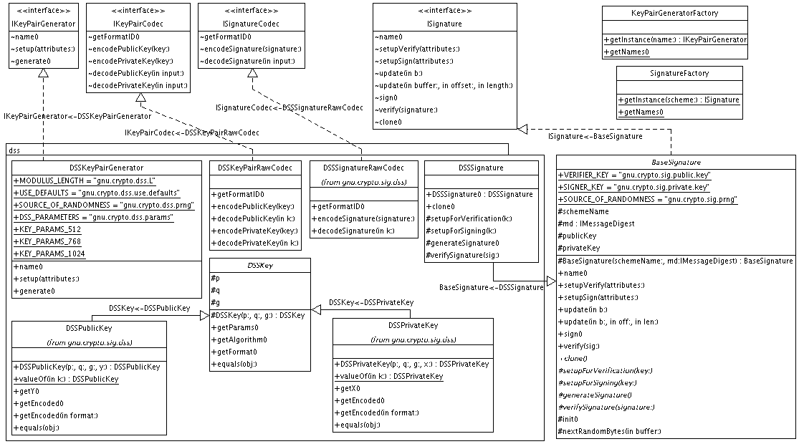
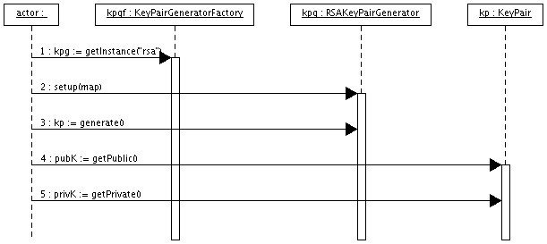
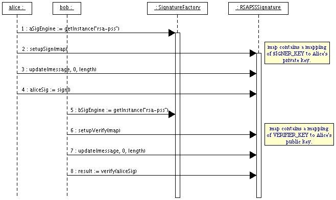

|
For the latest news and information visit The GNU Crypto project |
||||||||||
| PREV PACKAGE NEXT PACKAGE | FRAMES NO FRAMES | ||||||||||
See:
Description
| Interface Summary | |
| IKeyPairCodec | The visible methods of an object that knows how to encode and decode cryptographic asymmetric keypairs. |
| IKeyPairGenerator | The visible methods of every asymmetric keypair generator. |
| ISignature | The visible methods of every signature-with-appendix scheme. |
| ISignatureCodec | The visible methods of an object that knows how to encode and decode cryptographic signatures. |
| Class Summary | |
| BaseSignature | A base abstract class to facilitate implementations of concrete Signatures. |
| KeyPairGeneratorFactory | A Factory to instantiate asymmetric keypair generators. |
| SignatureFactory | A Factory to instantiate signature-with-appendix handlers. |
Provides a basic API for algorithms to generate Public/Private keypairs, and use those keypairs in Digital Signature schemes.
Two schemes are implemented in this library: the Digital Signature Scheme (DSS), and the RSA-PSS.
The following diagram shows the important classes participating in this package, with special emphasis on the DSS classes:

The next two diagrams show the sequences involved in (a) generating a keypair, and (b) using those keypairs to sign and verify a message stream.


The following example shows the code involved in the above sequence diagrams
ISignature dss = SignatureFactory.getInstance("DSS");
Map attrib = new HashMap();
attrib.put(ISignature.SIGNER_KEY, privateDsaKey);
dss.setupSign(attrib);
dss.update(message, 0, message.length);
Object sig = dss.sign();
ISignatureCodec codec = new DSSSignatureRawCodec();
byte[] encoded = codec.encodeSignature(sig);
Object sig2 = codec.decodeSignature(encoded);
attrib.clear();
attrib.put(ISignature.VERIFIER_KEY, publicDsaKey);
dss.setupVerify(attrib);
dss.update(message, 0, message.length);
boolean valid = dss.verify(sig);
|
For the latest news and information visit The GNU Crypto project |
||||||||||
| PREV PACKAGE NEXT PACKAGE | FRAMES NO FRAMES | ||||||||||